Virtualization & History
Types of Virtualization
🔧 HW-Level Virtualization
- Network Virtualization
- Storage Virtualization
- Server Virtualization (VMs)
📦 OS-Level Virtualization
- Application Virtualization
- Containers (Docker)
- Shares host OS kernel
Evolution Timeline
| Era | Technology | Problem Solved | Drawback |
|---|---|---|---|
| Bad Old Days | Physical servers | — | 1 app per server, huge waste |
| VMware Era | Hypervisor / VMs | Multiple apps per server | VM overhead (OS per VM, licenses) |
| Container Era | Linux cgroups + namespaces | Lightweight isolation | Linux-only initially |
| Docker Era (2013) | Docker Engine | Easy containerization | — |
Docker — The Technology & The Company
🏢 Docker, Inc. (The Company)
- Originally dotCloud (PaaS provider)
- Built on Linux containers
- Renamed Docker, Inc. in 2013
- Products: Docker Desktop + Docker Hub
- Open source on GitHub
⚙️ Docker Technology (The Stack)
- Runs on Windows and Linux
- Create, manage, orchestrate containers
- Three main components: Runtime, Daemon, Orchestrator
Docker Architecture
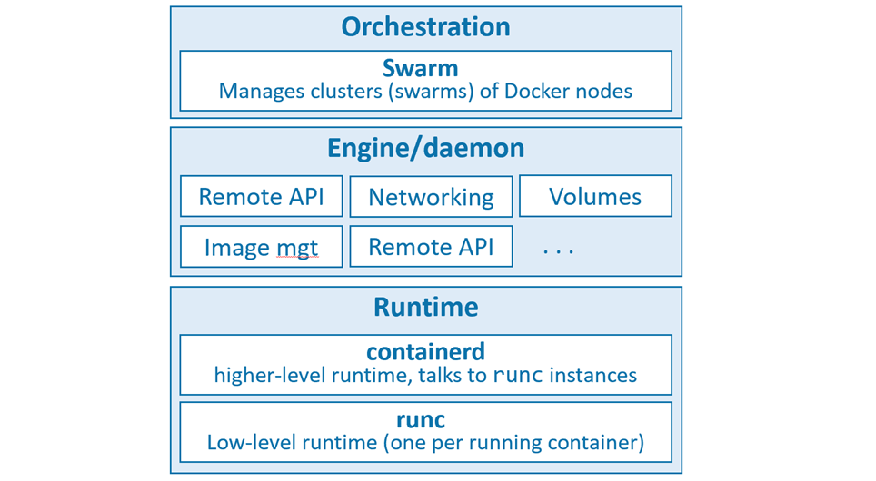
| Component | Binary | Role |
|---|---|---|
| Low-level Runtime | runc | OCI-compliant. Creates/starts/stops containers. Builds OS constructs (namespaces, cgroups). |
| High-level Runtime | containerd | Manages runc. Pulls images, handles networking & volumes. CNCF open-source project. |
| Daemon / Engine | dockerd | Exposes Docker REST API. Manages images, volumes, networks. Top-level orchestration. |
| Orchestrator | Swarm | Native cluster management. Clusters called swarms. |
Open Container Initiative (OCI)
A governance council responsible for standardizing low-level container infrastructure. Two key specs:
- image-spec — defines what a container image is
- runtime-spec — defines how to run a container
Installing Docker
🖥️ Docker Desktop
- Windows 10 / macOS
- Single-engine Docker
- Docker Compose included
- Single-node Kubernetes cluster
🐧 Server Installs
- Linux (preferred)
- Windows Server 2019
- Play with Docker (browser)
Install on Ubuntu (Linux)
# 1. Remove old versions $ sudo apt-get remove docker docker-engine docker.io containerd runc # 2. Install prerequisites $ sudo apt-get update $ sudo apt-get install ca-certificates curl gnupg lsb-release # 3. Add Docker GPG key $ curl -fsSL https://download.docker.com/linux/ubuntu/gpg | \ sudo gpg --dearmor -o /usr/share/keyrings/docker-archive-keyring.gpg # 4. Add Docker repository $ echo "deb [arch=$(dpkg --print-architecture) \ signed-by=/usr/share/keyrings/docker-archive-keyring.gpg] \ https://download.docker.com/linux/ubuntu \ $(lsb_release -cs) stable" | \ sudo tee /etc/apt/sources.list.d/docker.list > /dev/null # 5. Install Docker Engine $ sudo apt-get update $ sudo apt-get install docker-ce docker-ce-cli containerd.io # 6. Verify $ sudo docker --version $ sudo docker info
Post-install: Avoid sudo
# Check current groups $ sudo getent group $ groups # Add user to docker group $ sudo usermod -a -G docker <username> $ groups # verify
The Big Picture — Ops & Dev Perspectives
🛠️ Ops Perspective
- Download images from registries
- Start / stop / delete containers
- Log into running containers
- Run commands inside containers
- List and inspect containers
💻 Dev Perspective
- Clone repo with Dockerfile
- Build image from Dockerfile
- Run container from image
- Test application
- Push to registry
Ops Quick Commands
# Confirm installation $ docker version # Pull image $ docker image pull ubuntu:latest # Launch interactive container $ docker container run -it ubuntu:latest /bin/bash # Exit without terminating Ctrl-PQ # Attach to running container $ docker container exec -it <name> bash # Stop / Start / Delete $ docker container stop <name> $ docker container start <name> $ docker container rm <name>
Dev Quick Commands
# Clone repo $ git clone https://github.com/nigelpoulton/psweb.git # Inspect Dockerfile $ cat Dockerfile # Build image $ docker image build -t test:latest . # Run containerized app with port mapping $ docker container run -d \ --name web1 \ --publish 8080:8080 \ test:latest
The Docker Engine — Deep Dive
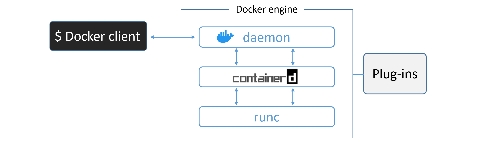
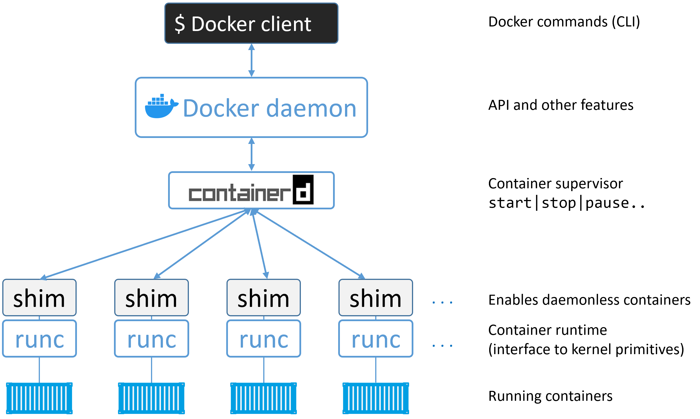
runc — The OCI Layer
- CLI wrapper, standalone container runtime tool
- Only creates containers — no long-running daemon
- Reference implementation of the OCI runtime-spec
- Also called "the OCI layer"
containerd
- Background daemon process:
ps -elf | grep containerd - Manages full container lifecycle: start | stop | pause | rm
- Handles image pulls, volumes, networks
- Initially by Docker, Inc. → donated to CNCF
Container Creation Flow
$ docker container run --name ctr1 -it alpine:latest sh
/var/run/docker.sock (Linux) or //./pipe/docker_engine (Windows)dockerd) receives the requestcontainerd via gRPCcontainerd converts the image into an OCI bundle and invokes runcrunc interfaces with OS kernel (namespaces, cgroups) and creates the container as a child processrunc exits. The shim takes over (keeps STDIN/STDOUT open, reports status to daemon)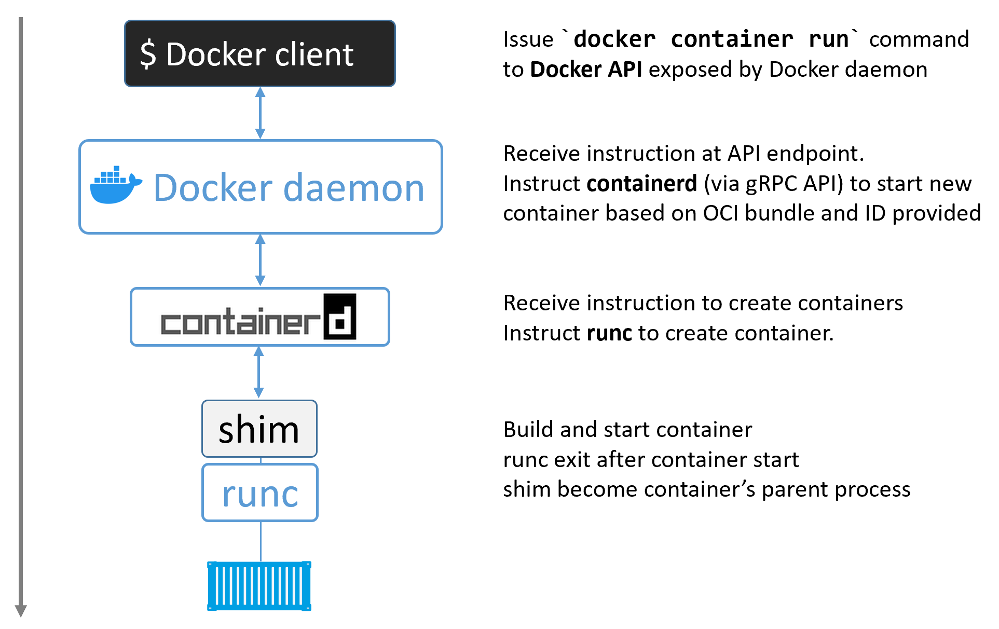
The Shim
A reduced version of containerd that stays running after runc exits:
- Keeps STDIN/STDOUT streams open even after daemon restart
- Reports container exit status back to the daemon
- Enables "daemonless containers" — you can upgrade dockerd without killing running containers
Process Summary
$ ps -elf | grep container # You'll see: dockerd, docker-containerd, docker-containerd-shim, docker-runc
Client ↔ Daemon Communication
| Channel | Socket / Port | Security |
|---|---|---|
| Local Linux | /var/run/docker.sock | IPC socket |
| Local Windows | //./pipe/docker_engine | Named pipe |
| Remote (insecure) | 2375/tcp | None — avoid in production |
| Remote (TLS) | 2376/tcp | mTLS — client + daemon certs |
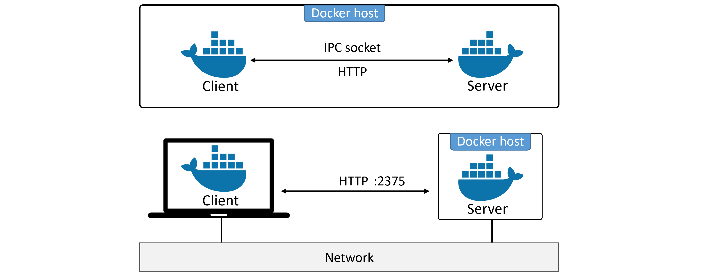
Images
Image Layers
A Docker image is a stack of loosely-connected read-only layers. Each layer is one or more files. Docker uses a storage driver to stack and merge layers into a single unified filesystem.
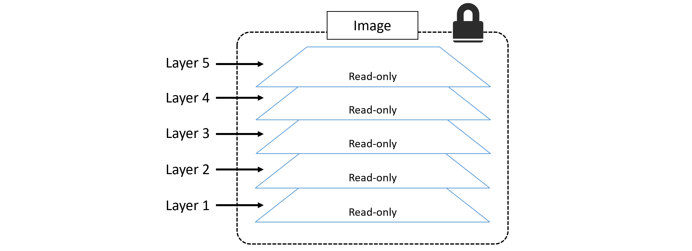
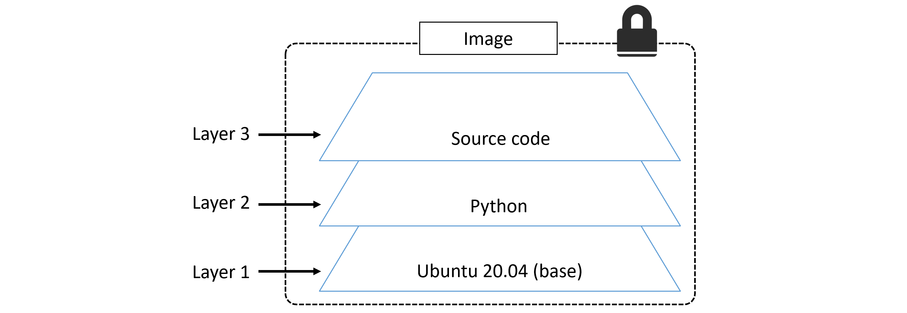
| OS | Storage Drivers |
|---|---|
| Linux | overlay2 (recommended), AUFS, devicemapper, btrfs, zfs |
| Windows | windowsfilter (NTFS) |
Image Registry & Naming
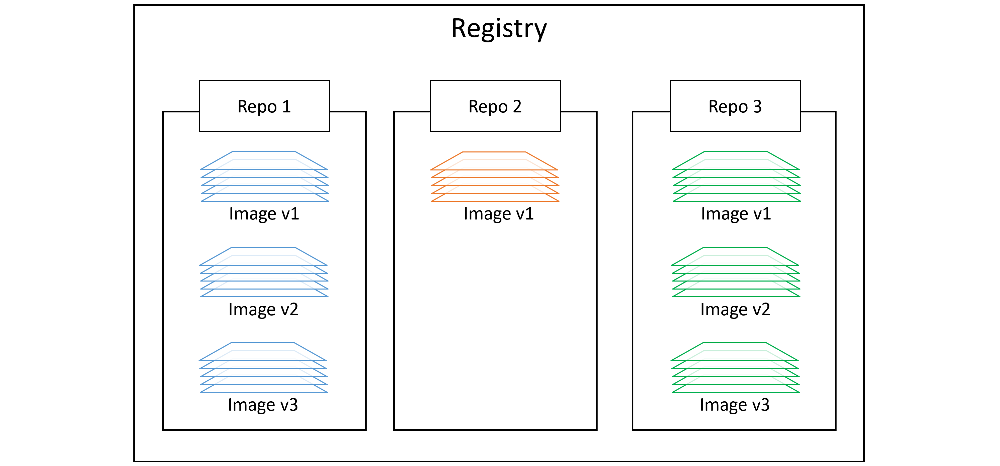
registry/repo:tag| Type | URL Pattern | Example Pull |
|---|---|---|
| Official | hub.docker.com/_/<name> | docker image pull nginx:latest |
| Unofficial | hub.docker.com/r/<user>/<repo> | docker image pull nigelpoulton/tu-demo:v2 |
| 3rd Party Registry | <registry-host>/<repo>:<tag> | docker image pull gcr.io/google-containers/git-sync:v3.1.5 |
Image Commands
# Pull image $ docker image pull alpine:latest $ docker image pull mongo:4.2.6 $ docker image pull -a nigelpoulton/tu-demo # all tags # List images $ docker image ls $ docker image ls --digests alpine # Inspect layers and metadata $ docker image inspect ubuntu:latest $ docker image history web:latest # Search Docker Hub $ docker search alpine --filter "is-official=true" # Delete images $ docker image rm <name> $ docker image rm $(docker image ls -q) -f # delete all $ docker image prune # remove unreferenced images $ docker image prune -a # remove all dangling images
Image Digests (Content Addressable Storage)
Docker 1.10+ uses cryptographic content hashes (digests) to uniquely identify images. Use a digest to pull the exact image you expect — immune to tag mutations.
$ docker image pull alpine
$ docker image ls --digests alpine
# Output shows sha256:... digest per image
Multi-Architecture Images
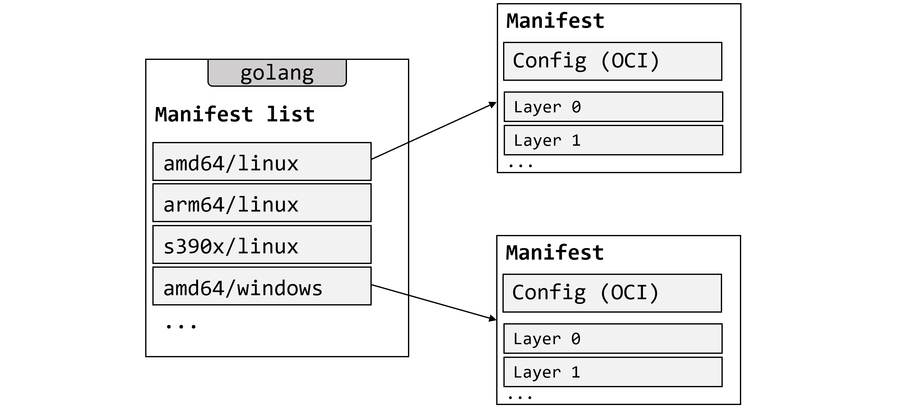
alpine:latest) can support multiple CPU architectures and OS types. When you pull, Docker inspects your platform and fetches the correct variant from the manifest list automatically. All official images have manifest lists.# Inspect manifest list $ docker manifest inspect golang # Build for a specific platform $ docker buildx build --platform linux/arm/v7 -t myimage:arm-v7 . # Create custom manifest list $ docker manifest create
Containers
Containers vs VMs
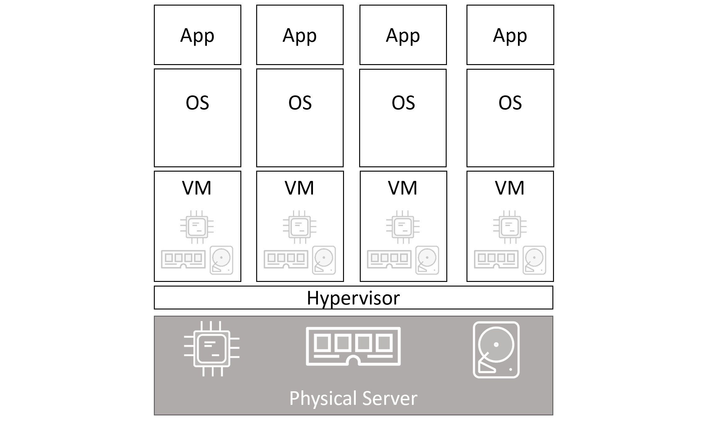
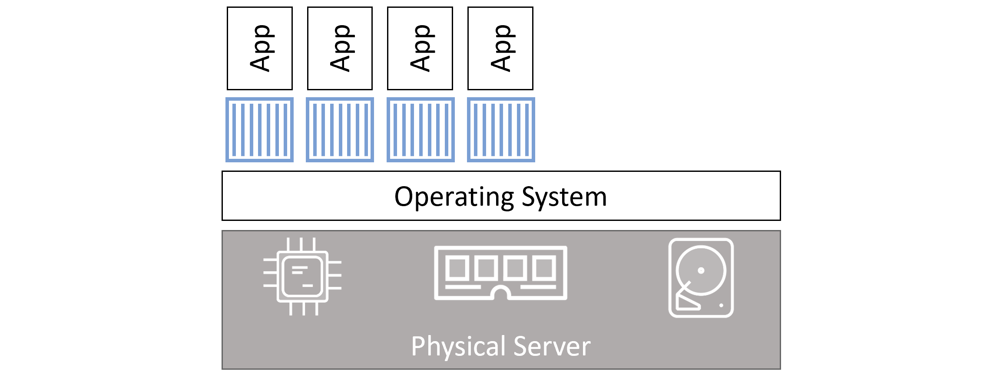
| Attribute | Virtual Machines | Containers |
|---|---|---|
| Isolation | Hardware (hypervisor) | OS (namespaces + cgroups) |
| Startup Time | Minutes | Milliseconds |
| Resource Overhead | High (full OS per VM) | Minimal |
| OS per instance | Yes | No (shared kernel) |
| Licenses | Per OS | None (shared) |
| Attack surface | Multiple kernels | Single kernel |
| Portability | Large images (GB) | Small images (MB) |
Container Lifecycle
# Start interactive container with name $ docker container run --name myapp -it ubuntu:latest /bin/bash # Flags -i → Keep STDIN open (interactive) -t → Allocate pseudo-TTY -d → Detached mode (background) --name → Set container name # Exit without killing (detach) Ctrl-PQ # Attach to running container $ docker container exec -it <name> bash # Stop (sends SIGTERM, then SIGKILL after 10s) $ docker container stop <name> # Start stopped container $ docker container start <name> # Delete (must be stopped) $ docker container rm <name> # Force delete running container $ docker container rm -f <name> # Delete ALL containers $ docker container rm $(docker container ls -aq) -f
exit in bash), the container stops. Use Ctrl-PQ to detach without stopping it.
Restart Policies
$ docker container run --name <name> --restart always <image> <cmd>
| Policy | Restarts on crash? | Restarts after manual stop? | Restarts after daemon restart? |
|---|---|---|---|
| always | ✓ Yes | ✓ Yes | ✓ Yes |
| unless-stopped | ✓ Yes | ✗ No | ✗ No |
| on-failure | ✓ Yes (non-zero exit) | ✗ No | ✓ Yes |
Real-World Examples
# Web server (nginx on port 80) $ docker container run -d --name webserver -p 80:80 nginx:latest # SQL Server (MSSQL 2019) $ docker run -e "ACCEPT_EULA=Y" -e "SA_PASSWORD=P@ssw0rd" \ -e "MSSQL_PID=Express" \ -p 1433:1433 \ -d mcr.microsoft.com/mssql/server:2019-latest
Inspect a Container
$ docker container inspect <name>
# Returns JSON with: Cmd, Entrypoint, Mounts, NetworkSettings, RestartCount, State...
Container Commands Reference
docker container runStart a new container from an image
docker container ls [-a]List running containers. Add -a for stopped too
docker container exec -itRun a new process inside running container
docker container stopGraceful stop (SIGTERM → SIGKILL)
docker container startRestart a stopped container
docker container rm [-f]Delete stopped (or force-delete running) container
docker container inspectFull JSON config and runtime info
docker container logsView container stdout/stderr logs
Containerizing an Application
Containerizing = taking an application and configuring it to run as a container.
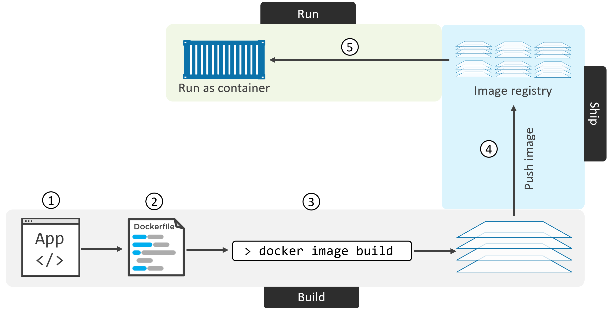
docker image build → image in local cache → optional push to registry → container run. Each step builds on the previous.Containerization Steps
docker image build to create the imageDockerfile Instructions Reference
| Instruction | Creates Layer? | Purpose | Example |
|---|---|---|---|
FROM | Yes (base) | Set base image — must be first instruction | FROM alpine:latest |
LABEL | No | Add metadata (maintainer, version) | LABEL maintainer="me@email.com" |
RUN | Yes | Execute shell command during build | RUN apk add nodejs npm |
COPY | Yes | Copy files from build context into image | COPY . /src |
ADD | Yes | Like COPY but also unpacks archives and fetches URLs | ADD app.tar.gz /app |
WORKDIR | No | Set working directory for subsequent instructions | WORKDIR /src |
EXPOSE | No | Document which port the app listens on | EXPOSE 8080 |
ENV | No | Set environment variables | ENV NODE_ENV=production |
ENTRYPOINT | No | Set default executable for the container | ENTRYPOINT ["node", "./app.js"] |
CMD | No | Default arguments to ENTRYPOINT (overridable) | CMD ["--port", "8080"] |
VOLUME | No | Declare mount point for persistent data | VOLUME /data |
HEALTHCHECK | No | Define health check command | HEALTHCHECK CMD curl -f http://localhost/ |
Example Dockerfile (Node.js App)
# Base layer — Alpine Linux FROM alpine # Metadata LABEL maintainer="nigelpoulton@hotmail.com" # Install runtime deps (creates new layer) RUN apk add --update nodejs nodejs-npm # Copy app source into image (creates new layer) COPY . /src # Set working directory WORKDIR /src # Install npm dependencies (creates new layer) RUN npm install # Document port EXPOSE 8080 # Default app to run ENTRYPOINT ["node", "./app.js"]
Build, Tag, and Push
# Build image $ docker image build -t web:latest . # Verify $ docker image ls $ docker image inspect web:latest $ docker image history web:latest # Login to Docker Hub $ docker login # Tag (must include your account name) $ docker image tag web:latest yourusername/web:latest # Push $ docker image push yourusername/web:latest # Run from registry $ docker container run -d --name c1 -p 80:8080 yourusername/web:latest
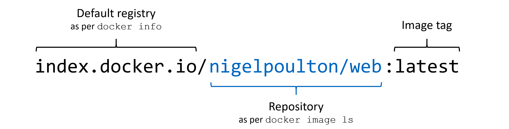
Multi-Stage Builds
One Dockerfile with multiple FROM instructions. Each is a build stage. Final stage only copies what's needed — keeping production image small.
FROM node:latest AS storefront
WORKDIR /usr/src/atsea/app/react-app
COPY react-app .
RUN npm install
RUN npm run build
FROM maven:latest AS appserver
WORKDIR /usr/src/atsea
COPY pom.xml .
RUN mvn -B -f pom.xml -s /usr/share/maven/ref/settings-docker.xml dependency:resolve
COPY . .
RUN mvn -B -s /usr/share/maven/ref/settings-docker.xml package -DskipTests
FROM java:8-jdk-alpine AS production
RUN adduser -Dh /home/gordon gordon
WORKDIR /static
# Copy ONLY the built artifacts from previous stages
COPY --from=storefront /usr/src/atsea/app/react-app/build/ .
WORKDIR /app
COPY --from=appserver /usr/src/atsea/target/AtSea-0.0.1-SNAPSHOT.jar .
ENTRYPOINT ["java", "-jar", "/app/AtSea-0.0.1-SNAPSHOT.jar"]
CMD ["--spring.profiles.active=postgres"]
Build Best Practices
| Practice | How | Why |
|---|---|---|
| Leverage build cache | Order Dockerfile instructions from least-to-most changing | Cache hit = skipped layer = faster rebuild |
| Squash image | docker image build --squash | Merges all layers into one — reduces final size, hides intermediate state |
| No recommended packages | apt-get install --no-install-recommends | Only main dependencies installed, keeps image lean |
| Multi-stage builds | Separate build and production stages | Build tools don't end up in production image |
| Use .dockerignore | Create .dockerignore file | Excludes unnecessary files from build context |
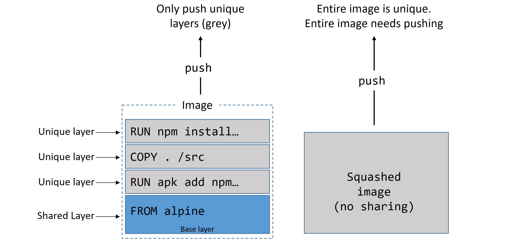
Deploying Apps with Docker Compose
Example Microservices App
Services in a typical app:
- Web front-end
- Ordering service
- Catalog service
- Back-end database
- Logging
- Authentication
- Authorization
Compose File Keys:
- version — Compose file format version
- services — Container definitions
- networks — Network definitions
- volumes — Volume definitions
docker-compose.yml Example
version: "3.8"
services:
web-fe:
build: . # Build from Dockerfile in current dir
command: python app.py
ports:
- target: 5000
published: 5000
networks:
- counter-net
volumes:
- type: volume
source: counter-vol
target: /code
redis:
image: "redis:alpine" # Pull from Docker Hub
networks:
counter-net:
networks:
counter-net:
volumes:
counter-vol:
Installing Compose on Linux
# Download binary $ sudo curl -L \ https://github.com/docker/compose/releases/download/v2.2.3/docker-compose-linux-x86_64 \ -o /usr/local/bin/docker-compose # Make executable $ sudo chmod +x /usr/local/bin/docker-compose # Verify $ docker-compose --version
Deploying & Managing a Compose App
# Deploy (build images + start containers) $ docker-compose up # Deploy in background $ docker-compose up -d # Use custom compose file name $ docker-compose -f prod-config.yml up # List containers in app $ docker-compose ps # List processes in each service $ docker-compose top # Stop without deleting $ docker-compose stop # Start stopped app $ docker-compose restart # Delete stopped app (keeps volumes!) $ docker-compose rm # Stop AND delete (preserves volumes + images) $ docker-compose down
docker-compose down removes containers and networks but NOT volumes. To also delete volumes: docker-compose down --volumes
Compose Commands Summary
docker-compose up [-d]Deploy the app (optionally in background)
docker-compose downStop + delete containers and networks
docker-compose stopStop containers without deleting
docker-compose restartRestart stopped app
docker-compose rmDelete stopped Compose app
docker-compose psList containers in the app
docker-compose topShow processes running in each service
docker-compose logsView aggregated logs from all services
Docker Networking
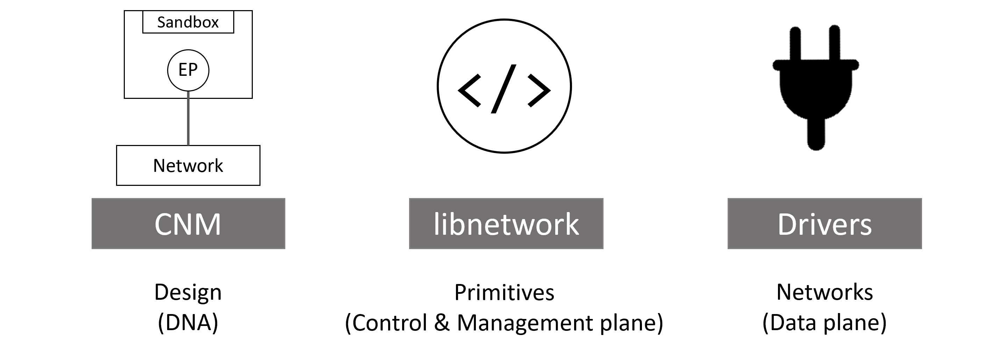
Container Network Model (CNM) Building Blocks
📦 Sandboxes
Isolated network stack per container. Contains Ethernet interfaces, ports, routing tables, and DNS config.
🔌 Endpoints
Virtual network interfaces. Connect sandboxes to networks. One sandbox can have multiple endpoints.
🌐 Networks
Software implementation of an 802.1d switch. Groups of endpoints that can communicate with each other.
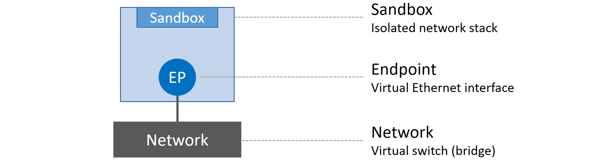
Network Drivers
| OS | Driver | Use Case |
|---|---|---|
| Linux | bridge | Default. Single-host container-to-container communication |
overlay | Multi-host communication (Swarm) | |
macvlan | Connect containers to existing VLANs with their own MAC | |
| Windows | nat | Equivalent of Linux bridge |
overlay | Multi-host | |
transparent | Equivalent of macvlan | |
l2bridge | Layer 2 bridging |
Single-Host Bridge Networks
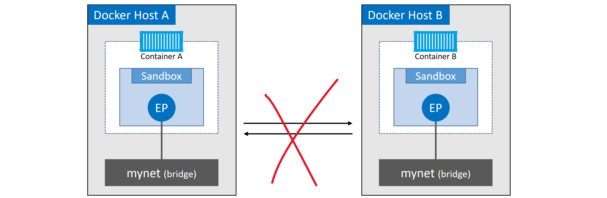
# List all networks $ docker network ls # Inspect a network $ docker network inspect bridge # Check underlying Linux bridge $ ip link show # Look for docker0 # Create custom bridge network $ docker network create -d bridge localnet # Connect container to custom network $ docker container run -d --name c1 --network localnet alpine sleep 1d # Create c2 on same network — can ping c1 by name $ docker container run -it --name c2 --network localnet alpine sh # ping c1 ← works on user-defined networks (built-in DNS)
bridge network does NOT support DNS-based name resolution between containers. User-defined bridge networks DO. Always create a custom bridge network for inter-container communication by name.
Port Mapping
# Map host port 5000 → container port 80 $ docker container run -d --name web \ --network localnet \ --publish 5000:80 \ nginx # Verify port mapping $ docker port web
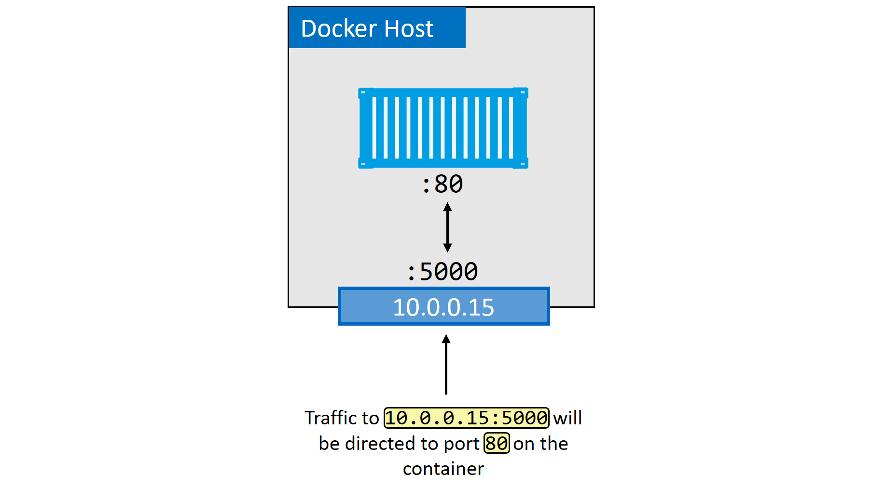
-p host_port:container_port) creates a NAT rule so external traffic hitting the host port gets forwarded to the container port.MACVLAN — Connecting to Existing Networks
The macvlan driver gives each container its own MAC address on the physical network — making them appear as physical devices. Requires NIC in promiscuous mode.
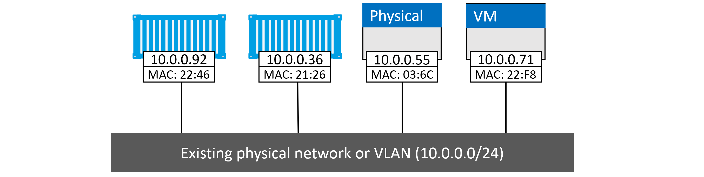
# Create MACVLAN network $ docker network create -d macvlan \ --subnet=10.0.0.0/24 \ --ip-range=10.0.0.0/25 \ --gateway=10.0.0.1 \ -o parent=eth0.100 \ macvlan100 # Run container on MACVLAN $ docker container run -d --name mactainer1 \ --network macvlan100 \ alpine sleep 1d
Service Discovery
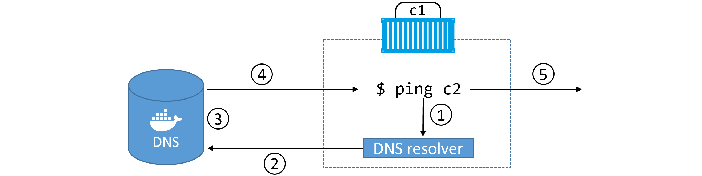
# Custom DNS and search domain
$ docker container run -it --name c1 \
--dns=8.8.8.8 \
--dns-search=example.com \
alpine sh
Networking Commands
docker network lsList all networks
docker network createCreate a new network
docker network inspectDetailed config of a network
docker network pruneDelete all unused networks
docker network rmDelete specific network
docker port <container>Show port mappings
Volumes & Persistent Data
📝 Non-Persistent (Ephemeral)
- Lives in the container's writable layer
- Created when container is created
- Deleted when container is deleted
- Managed by storage driver (overlay2 on Ubuntu)
- Linux:
/var/lib/docker/<storage-driver>/ - Windows:
C:\ProgramData\Docker\windowsfilter\
💾 Persistent (Volumes)
- Independent objects, not tied to container lifecycle
- Survive container deletion
- Can be mapped to external storage (SAN, NAS, cloud)
- Sharable across multiple containers / hosts
- Recommended way to persist data in Docker
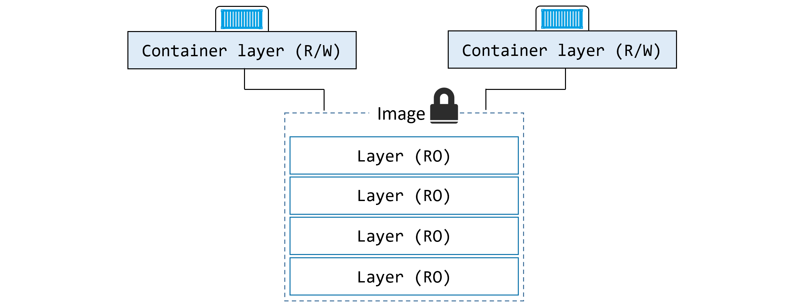
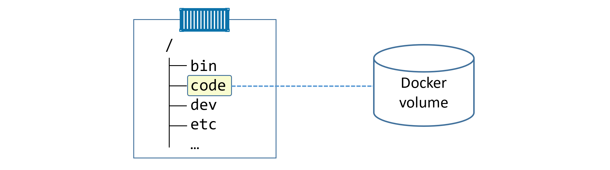
Creating and Managing Volumes
# Create a volume (using local driver by default) $ docker volume create myvol # List volumes $ docker volume ls # Inspect volume $ docker volume inspect myvol # Key fields: Mountpoint, Driver, Scope # Delete specific volume $ docker volume rm myvol # Delete ALL unused volumes (use with caution!) $ docker volume prune
Volume Inspect Output
[
{
"CreatedAt": "2020-05-02T17:44:34Z",
"Driver": "local",
"Labels": {},
"Mountpoint": "/var/lib/docker/volumes/myvol/_data", ← host path
"Name": "myvol",
"Options": {},
"Scope": "local" ← only this host can access it
}
]
Using Volumes with Containers
# Mount volume into container $ docker container run -dit \ --name voltainer \ --mount source=bizvol,target=/vol \ alpine # Write data to the volume $ docker container exec -it voltainer sh # echo "persistent data" > /vol/file1 # cat /vol/file1 # exit # Delete the container $ docker container rm voltainer -f # Volume and data still exists! $ docker volume ls $ ls -l /var/lib/docker/volumes/bizvol/_data/ # Attach same volume to new container $ docker run --name hellcat \ --mount source=bizvol,target=/vol \ alpine sleep 1d
Volumes in Dockerfiles
# Declare a volume mount point in Dockerfile VOLUME /data # Note: host path cannot be specified in Dockerfile — only container mount point
Sharing Volumes Across Cluster Nodes
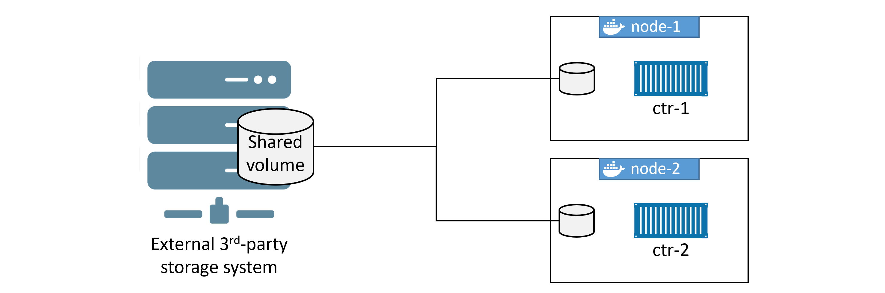
Volume Commands Reference
docker volume createCreate a new named volume
docker volume lsList all volumes on this host
docker volume inspectShow detailed volume info including host mountpoint
docker volume pruneDelete all unused volumes — irreversible!
docker volume rmDelete specific named volume
docker plugin installInstall third-party volume drivers from Docker Hub
docker plugin lsList installed plugins
Master Command Cheatsheet
Images
| Command | Description |
|---|---|
docker image pull <repo>:<tag> | Download image from registry |
docker image pull -a <repo> | Download ALL tags of an image |
docker image ls | List images in local cache |
docker image ls --digests | Show image digests (hashes) |
docker image inspect <image> | Full metadata and layer info |
docker image history <image> | Show build history and layer sizes |
docker image build -t <name>:<tag> . | Build image from Dockerfile |
docker image tag <src> <dst> | Create additional tag for image |
docker image push <repo>:<tag> | Push image to registry |
docker image rm <image> | Delete image |
docker image prune | Remove unreferenced images |
docker image prune -a | Remove all dangling images |
docker manifest inspect <image> | Inspect multi-arch manifest list |
docker buildx build --platform <arch> | Build for specific CPU architecture |
docker search <term> | Search Docker Hub |
Containers
| Command | Description |
|---|---|
docker container run -it <image> | Run interactive container |
docker container run -d <image> | Run detached (background) |
docker container run --name <n> | Set container name |
docker container run -p host:cont | Port mapping |
docker container run --restart always | Auto-restart policy |
docker container run --network <net> | Connect to specific network |
docker container run --mount source=vol,target=/path | Mount a volume |
docker container ls [-a] | List running [+ stopped] containers |
docker container exec -it <name> bash | Shell into running container |
docker container stop <name> | Graceful stop (SIGTERM) |
docker container start <name> | Restart stopped container |
docker container rm [-f] <name> | Delete container |
docker container rm $(docker container ls -aq) -f | Delete ALL containers |
docker container inspect <name> | Full configuration JSON |
docker container logs <name> | View logs |
Compose
| Command | Description |
|---|---|
docker-compose up [-d] | Start all services (optionally detached) |
docker-compose down | Stop + remove containers and networks |
docker-compose stop | Stop without removing |
docker-compose restart | Restart stopped services |
docker-compose ps | List containers in app |
docker-compose top | Show processes per service |
docker-compose logs | Aggregate logs |
docker-compose rm | Delete stopped app |
Networking
| Command | Description |
|---|---|
docker network ls | List networks |
docker network create -d bridge <name> | Create bridge network |
docker network inspect <name> | Inspect network details |
docker network prune | Remove unused networks |
docker network rm <name> | Delete a network |
docker port <container> | Show port mappings |
Volumes
| Command | Description |
|---|---|
docker volume create <name> | Create named volume |
docker volume ls | List all volumes |
docker volume inspect <name> | Inspect volume (shows host path) |
docker volume rm <name> | Delete volume |
docker volume prune | Delete all unused volumes |
System
| Command | Description |
|---|---|
docker version | Client and server version info |
docker info | System-wide info (registry, driver, etc.) |
docker login | Authenticate with Docker Hub |
docker system prune | Remove all unused objects |
service docker status | Check Docker service status (Linux) |
systemctl is-active docker | Check if Docker daemon is active |
ps -elf | grep containerd | See containerd/runc processes |
ip link show | See Docker bridge interfaces (docker0) |
Based on Docker Deep Dive by Nigel Poulton · Docker Hub · Docker Docs · OCI